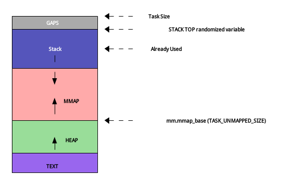

内存管理技术
1 TODO 概述
待定内容：介绍用户态内存使用于管理、内核态内存使用与管理、内存池、伙伴系统、虚拟内存管理等。
2 用户态内存管理技术
2.1 从程序地址空间布局谈起
二进制可执行文件是由特定格式的二进制代码和数据组成。常见的格式有如下三种：
- COFF
- COFF是Common File Object，由UNIX System V引入，基本被ELF替代；
- PE
- PE是Portable Execuable，Windows系统基本都是此类格式。mingw查看ls类别：
~$ file /bin/ls /bin/ls: PE32+ executable (console) x86-64 (stripped to external PDB), for MS Windows
- ELF
- ELF是Executable and Linkable Format，首次在SVR4发布，1999年成为UNIX
和类UNIX操作系统的标准二进制格式。
可执行文件加载到内存中时，分为代码段和数据段。数据段又进一步分为初始化数据段、未初始化数据段、栈和堆。关于进程的内存布局细节参考进程地址空间，本文主要介绍数据段内存管理。
初始化数据段(initialized data)位于可执行文件data段，占用存储空间。未初始化数据段 (uninitialized data)位于BSS(Block Storage Start, 来自IBM 704机器的汇编指令。也有记作Block Start of Symbol)。未初始化或初始化为0的全局变量都在BSS段。这两种数据结构都是静态确定的，无法在运行时分配或释放。
栈(start)用于保存所有的局部变量，比如函数参数、返回地址、非整型的返回值、函数内部局部变量都保存在栈中。栈后进先出特点非常适合保存/恢复现场。因为函数的返回地址保存在栈中，修改返回地址数值，可以改变程序的预期行为，这是栈溢出攻击。为了阻止栈溢出攻击，LINUX内核添加了栈随机变量，通过修改 /proc/sys/kernel/randomize_va_space 为
0关闭栈随机化，为2打开栈随机化。
堆(heap)用于存放动态分配的内存。典型分配器函数 malloc 分配堆内存，目前比较好的分配器包括glibc的 ptmalloc 、google的 tcmalloc 、facebook的 jemalloc 。
LINUX系统提供 brk 和 mmap 扩展/收缩堆内存。堆内存使用不当可导致内存泄漏。通用的分配器函数（比如glibc的malloc）要考虑多种场景下的内存占用和性能的平衡问题，在某种特定场景下性能往往不是最优的，因此可以通过定制（特化）分配器函数的方式，优化堆内存的分配性能，提高其使用率、减少碎片化。这种定制的分配器称为内存池。C++
标准库STL allocator、Boost pool、memcached都是典型的内存池。2017年底整理内存技术时，翻出了2008年实现的内存池，放到了GitHub上mempool.c和mempool.h。通用内存分配器经过这么多年发展已经非常成熟，一般而言，所有的优化都是特化优化，比如，程序非常频繁的分配释放特定大小的结构体。
下图是一个典型的进程地址空间布局概要图：

2.2 可执行程序大小与地址空间分析
先参考如下示例代码：
#include <malloc.h> int initialized_data[1024*1024] = {1}; int uninitialized_data[1024*1024]; void *global_heap_data; int main() { int stack_data[1024*1024]; void *heap_data = malloc(1024*1024); global_heap_data = malloc(1024*1024); return 0; }
保存为data.c编译，观察结果，大小为4.1MB左右。
~$ gcc -o data data.c ~$ ls -lh data -rwxrwxr-x. 1 yanyg yanyg 4.1M Dec 5 22:22 data ls -l data -rwxrwxr-x. 1 yanyg yanyg 4202981 Dec 5 22:26 data
将代码第三行initialized_data初始化为0： int initialized_data[1024*1024]= {0} 。再次编译观察，大小为8.5KB左右。
~$ gcc -o data data.c ~$ ls -lh data -rwxrwxr-x. 1 yanyg yanyg 8.5K Dec 5 22:25 data ~$ ls -l data -rwxrwxr-x. 1 yanyg yanyg 8629 Dec 5 22:25 data
减少的4MB左右即为初始化数据段所占有。
使用readelf -a对initialized_data初始化为1的程序（4.1MB左右）进行进一步分析：
初始化数据段地址空间0x601040~0xa01060，长度0x400020；未初始化数据段地址空间 0xa01060~e010a0，长度0x400040。顺便说一句，_start(0x400440)为程序起始地址，而 main(400530)为main函数入口地址。
2.3 ASLR(地址空间布局随机化)策略
上一小节分析中，通过reaelf并未看到stack和heap起始地址与长度限制，因为这是在运行时确定的。系统调用exec用load_elf_binary函数加载ELF文件，该函数检测 randomize_va_space确定是否进行堆栈随机化(fs/binfmt_elf.c)：
- randomize_va_space=0
- 不进行随机化
- randomize_va_space=1
- 栈(stack)、vdso、mmap基地址随机化
- randomize_va_space=2
- 栈(stack)、vdso、mmap，以及brk区域堆进行随机化
上述实现称为LINUX ALSR(Address Space layout Randomization)策略，可以通过sysctl 或/proc/sys/kernel/randomize_va_space配置：
# set the value need superuser(root) privilege ~# echo 0 > /proc/sys/kernel/randomize_va_space ~# sysctl -n kernel.randomize_va_space 2 ~$ sysctl -w kernel.randomize_va_space=0 kernel.randomize_va_space = 0 ~$ sysctl -n kernel.randomize_va_space 0
设置不同的ALSR策略，多次运行cat /proc/self/maps或ls -l /proc/self/map_files/，观察每次地址是否相同：
~# sysctl -w kernel.randomize_va_space=0 kernel.randomize_va_space = 0 ~# ls -l /proc/self/map_files/ | grep ld-2 lr--------. 1 root root 64 Dec 5 23:48 7ffff7ddb000-7ffff7dfc000 -> /usr/lib64/ld-2.17.so lr--------. 1 root root 64 Dec 5 23:48 7ffff7ffc000-7ffff7ffd000 -> /usr/lib64/ld-2.17.so lr--------. 1 root root 64 Dec 5 23:48 7ffff7ffd000-7ffff7ffe000 -> /usr/lib64/ld-2.17.so ~# ls -l /proc/self/map_files/ | grep ld-2 lr--------. 1 root root 64 Dec 5 23:49 7ffff7ddb000-7ffff7dfc000 -> /usr/lib64/ld-2.17.so lr--------. 1 root root 64 Dec 5 23:49 7ffff7ffc000-7ffff7ffd000 -> /usr/lib64/ld-2.17.so lr--------. 1 root root 64 Dec 5 23:49 7ffff7ffd000-7ffff7ffe000 -> /usr/lib64/ld-2.17.so ~# sysctl -w kernel.randomize_va_space=2 kernel.randomize_va_space = 2 ~# ls -l /proc/self/map_files/ | grep ld-2 lr--------. 1 root root 64 Dec 5 23:49 7f12a95e5000-7f12a9606000 -> /usr/lib64/ld-2.17.so lr--------. 1 root root 64 Dec 5 23:49 7f12a9806000-7f12a9807000 -> /usr/lib64/ld-2.17.so lr--------. 1 root root 64 Dec 5 23:49 7f12a9807000-7f12a9808000 -> /usr/lib64/ld-2.17.so ~# ls -l /proc/self/map_files/ | grep ld-2 lr--------. 1 root root 64 Dec 5 23:49 7f80c2ef5000-7f80c2f16000 -> /usr/lib64/ld-2.17.so lr--------. 1 root root 64 Dec 5 23:49 7f80c3116000-7f80c3117000 -> /usr/lib64/ld-2.17.so lr--------. 1 root root 64 Dec 5 23:49 7f80c3117000-7f80c3118000 -> /usr/lib64/ld-2.17.so
64位体系下，地址空间比较充足，可以设置较大随机化范围提高安全性。brk的随机范围是 32MB(参见函数arch_randomize_brk)，stack在1GB范围内随机，vdso在随机栈(stack)之上一个PMD(Page Middle Directory, 16MB)范围再次随机，mmap随机范围受变量 /proc/sys/vm/mmap_rnd_bits控制，但会控制在2^16~2^24之间。相关代码包括 arch/x86/vdso/vma.c(function vdso_addr)、fs/binfmt_elf.c、mm/mmap.c。
2.4 栈空间管理
用户态进程栈大小通过 ulimit -s 查看，通过 ulimit -s new_size 修改。默认大小
8192KB(8MB)。如下程序可确认此特性：
#include <stdio.h> #include <string.h> #ifndef TEST_STACK_SIZE #define TEST_STACK_SIZE (1024*1024) #endif int main() { char s[TEST_STACK_SIZE]; printf("TEST_STACK_SIZE={%u bytes (%u KBytes)}\n", (unsigned int)TEST_STACK_SIZE, (unsigned int)TEST_STACK_SIZE/1024); memset(s, 0, TEST_STACK_SIZE); return 0; }
用 ulimit -s 设置栈大小，添加GCC编译参数 -DTEST_STACK_SIZE=<size> 构建测试：
~$ ulimit -s 8192 ~$ gcc -o stack stack.c ~$ ./stack TEST_STACK_SIZE={1048576 bytes (1024 KBytes)} ~$ gcc -o stack stack.c -DTEST_STACK_SIZE=$((1024*1024*7)) ~$ ./stack TEST_STACK_SIZE={7340032 bytes (7168 KBytes)} ~$ gcc -o stack stack.c -DTEST_STACK_SIZE=$((1024*1024*8)) ~$ ./stack Segmentation fault (core dumped) ~$ ulimit -s 10240 ~$ ulimit -s 10240 ~$ gcc -o stack stack.c -DTEST_STACK_SIZE=$((1024*1024*8)) ~$ ./stack TEST_STACK_SIZE={8388608 bytes (8192 KBytes)} ~$ gcc -o stack stack.c -DTEST_STACK_SIZE=$((1024*1024*9)) ~$ ./stack TEST_STACK_SIZE={9437184 bytes (9216 KBytes)} ~$ gcc -o stack stack.c -DTEST_STACK_SIZE=$((1024*1024*10)) ~$ ./stack Segmentation fault (core dumped)
栈上定义变量大于等于栈大小时，运行出现段错误，这是栈溢出导致的问题。程序启动、调用已经占用一部分栈空间，因此当栈上局部变量空间略小于栈大小时，也会溢出，具体数据与平台、系统、函数调用深度相关。上述测试程序，只有TEST_STACK_SIZE小于栈大小 10KB及以上时才能避免段错误。
2.5 TODO 堆内存管理
- 内存泄漏、进程退出时全部回收、brk与mmap
#include <malloc.h> #include <stdio.h> #include <string.h> int main() { int i; void *p[10000]; printf("Test memory usage\n"); for (i = 0; i < 10000; ++i) { p[i] = malloc(1024*512); if (!p[i]) { fprintf(stderr, "alloc %d failed\n", i); } memset(p[i], 0, 1024*512); } printf("Watch your memory usage, then press any key continue ...\n"); getchar(); printf("Do free ...\n"); for (i = 0; i < 10000; ++i) { free(p[i]); } printf("Watch your memory usage, then press any key exit ...\n"); getchar(); return 0; }
3 内核态内存管理
3.1 dummy
3.1.1 brk
brk stands for break. means program break
/* mm/mmap.c */ SYSCALL_DEFINE1(brk, unsigned long, brk) { ... } sched.h: task_struct: brk_randomized CONFIG_COMPAT_BRK: disable heap randomization /proc/sys/kernel/randomize_va_space sysctl -n kernel.randomize_va_space Generate two: Same: echo 0 > /proc/sys/kernel/randomize_va_space; cat /proc/self/maps > cat.maps.1; cat /proc/self/maps > cat.maps.2; diff cat.maps.[12] >/dev/null; echo $? Diff: echo 2 > /proc/sys/kernel/randomize_va_space; cat /proc/self/maps > cat.maps.1; cat /proc/self/maps > cat.maps.2; diff cat.maps.[12] >/dev/null; echo $?
4 读书笔记
4.1 Understanding The Linux Virtual Memory Manager(Mel Gorman, JUly 9, 2007)
4.1.1 Chapter
1
4.2 Professional Linux Kernel Architecture CN
4.2.1 概述
领域：
- 物理内存页的管理
- 分配大块内存的伙伴系统
- 分配小块内存的slab、slob、slub分配器
- 分配非连续内存块的vmalloc机制
- 进程的地址空间
LINUX将虚拟地址空间分两部分，底部较大用于用户进程，顶部则内核专用。32位系统下的典型分配是3:1。 PAE开启后32位系统可达64GB，但不是同时可访问。